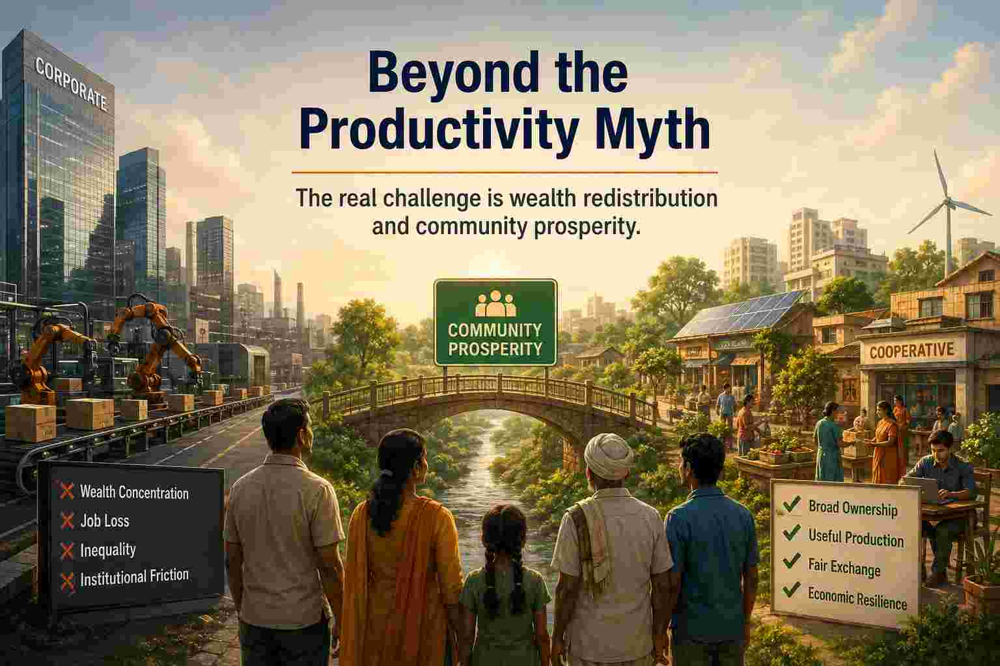

Beyond the Productivity Myth: Why India’s Real Challenge is Wealth Redistribution and Community Prosperity

Mainstream economic narratives often diagnose India’s economic challenges as a “productivity problem.” However, a closer examination of the ground reality reveals a fundamentally different issue. India does not suffer from a lack of productivity; rather, it suffers from a systemic failure in wealth distribution, institutional efficiency, and the equitable ownership of productive assets.
Here is a comprehensive, point-wise analysis of why the productivity narrative is flawed and what the true path to prosperity looks like.
1. The Myth of the Productivity Shortage
The conventional wisdom that India needs to work harder and produce more to grow is based on outdated economic paradigms.
The 5-Hour Workday Reality:
India does not have a productivity shortage. In fact, given the current trajectory of technological advancement, the ideal structure might actually require only 5 working hours per day to meet societal needs. What we need is a robust wealth redistribution system (like Universal Basic Income) is fully funded and implemented.
The “Obsolete Concept” Myth:
The obsession with endless productivity growth is largely a myth created and perpetuated by mainstream economists to sustain a growth-at-all-costs narrative.
The Job and Funding Deficit:
The core issue is not that people are lazy or unproductive. Everyone is willing to learn and work, but there are simply no jobs available. There are no mechanisms to distribute wealth to those who are willing to learn and work efficiently.
This is strongly supported by economists like Thomas Piketty (Capital in the Twenty-First Century) and Joseph Stiglitz. Since the 1970s, data from many economies shows a “great decoupling”: worker productivity has continued to rise, but median wages have stagnated. The article correctly identifies that who owns the assets (capital vs. labor) dictates who benefits from productivity.
Redistribution, Not Production:
Because the willingness to work exists but the opportunities do not, the core problem is fundamentally about wealth redistribution, not a deficit in productivity.
2. The Core Issue: Efficient Wealth Redistribution and Institutional Friction
While redistribution is the answer, how we redistribute is just as critical as the act itself. Simply throwing money at a problem does not guarantee prosperity.
The Multiplier Effect of Efficient Circulation:
The core problem is not just wealth redistribution, but efficient redistribution. If $1,000 is efficiently circulated among 100 people to create useful work, it can generate $100,000 in overall income through the velocity of money.
Lower- and middle-income individuals spend a higher percentage of their income on local goods and services, which stimulates the local economy. Concentrating wealth at the top often leads to “idle capital” (money sitting in offshore accounts or stock buybacks) rather than productive economic circulation.
Real Structural Bottlenecks:
We must acknowledge real, tangible issues like bad schooling and corrupt institutions. These are the actual hurdles that need solving. The “extractive institutions” (corruption, poor rule of law, bad schooling) are the one of the root causes of poverty. You cannot build a prosperous society on a foundation of institutional decay, regardless of how much funding is injected.
Overcoming Game Theory Traps:
Simply providing funding is not enough. We need to overcome systemic behavioral issues like the “prisoner’s dilemma” and the “free-rider problem.” Even with abundant funding, these institutional frictions can prevent the creation of true prosperity.
3. The Demographic Illusion: Population Decline and Automation
Economists frequently panic over declining populations, predicting economic ruin due to a shrinking workforce. This fear ignores current realities and future technological shifts.
The Unemployment Reality Check:
While economists predict a shrinking workforce will hurt the economy, we must look at the current scenario: we already have a massive working-age population, yet 40% of graduates are unemployed. This proves it is not a productivity problem, but a wealth distribution problem.
The Automation Paradigm:
In the age of advanced automation and AI, we do not need billions of workers to sustain an economy.
Meeting Needs with Fewer Workers:
If a country can distribute wealth efficiently, even a small percentage of the population can meet everyone’s needs. A shrinking population is not a crisis if the wealth generated by automation is shared equitably.
4. Productivity is Not the Same as Prosperity
A critical flaw in modern economics is the assumption that higher productivity automatically leads to a better society. Productivity is not the same as prosperity.
The Distribution of Gains Matters:
Historically, productivity was linked to higher living standards, but how the gains are distributed matters just as much as the output itself.
The Factory Example (High Productivity, Low Prosperity):
If a factory doubles its output using automation but lays off half its workers, and the profits go only to shareholders, productivity has increased, but broad prosperity has not.
The Farmer Example (High Productivity, High Prosperity):
If farmers use better tools, produce more with less waste, and earn higher incomes because they own the technology and sell directly to consumers, then productivity contributes to broad, shared prosperity.
The Ownership Question:
The issue isn’t productivity itself—it is who owns the productive assets and who captures the benefits.
5. The “Endless Loop” of Corporate Productivity
When productivity is pursued solely for corporate gain, it creates a destructive economic cycle that harms the working class.
The Destructive Cycle:
If the economic model follows this endless loop:
- Increase productivity,
- Concentrate production into larger firms,
- Replace labor with capital,
- Increase inequality,
- Repeat…
- The Result: Society becomes wealthier “on paper” (higher GDP), while the average person feels significantly worse off due to job insecurity and stagnant wages.
6. Redefining Economic Goals: From Corporate to Community Prosperity
To break the endless loop, we must shift our economic objectives away from corporate metrics and toward human-centric goals.
- Alternative Economic Objectives: Instead of maximizing GDP, we should aim to:
- Maximize economic security rather than just GDP.
- Maximize local ownership rather than corporate concentration.
- Maximize participation rather than employment by a few large firms.
- Maximize resilience rather than efficiency alone.
- Maximize shared wealth rather than total wealth.
- Technology as an Empowerment Tool: Technology should empower individuals and communities, not just large corporations. Open-source AI, decentralized manufacturing, cooperatives, community-owned infrastructure, and decentralized finance can keep ownership distributed.
- Redefining Efficiency: Efficiency and productivity are still useful concepts if defined correctly. Instead of asking, “How do we maximize output per worker for a corporation?” we should ask, “How do we maximize the well-being and economic independence of each community using the least resources?” This shifts the goal from corporate productivity to community prosperity.
Conclusion: The True Formula for Prosperity
Higher output is only valuable if it strengthens people’s lives, increases their autonomy, and distributes benefits widely rather than concentrating them. Aligning with a decentralized, community-oriented vision requires a fundamental shift in how we measure success.
Ultimately, the new economic objective can be summarized by this formula:
Prosperity = Broad ownership + Useful production + Fair exchange + Economic resilience
By abandoning the obsolete myth of endless corporate productivity and focusing on efficient wealth redistribution and community empowerment, India—and the world—can build an economy that actually serves its people.